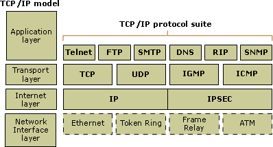
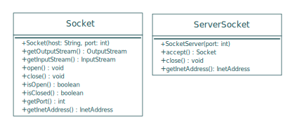
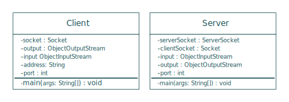

La communication réseau en Java
Par Dominique Bégin
Cégep de Sainte-Foy
Programmation Objet 420-310-SF
Plan de la présentation
- Le sujet
- Mots-clés
-
Approfondissement
- Diagrammes UML
- Socket et ServerSocket
- Application de démonstration
- DomSlator
- Avantages et désavantages
- Ressources
- Conclusion
Définition du sujet
La communication réseau est un moyen de faire communiquer plusieurs ordinateurs ensemble.
Mots-clés
- TCP-IP
La suite TCP/IP est l'ensemble des protocoles utilisés pour le transfert des données sur Internet.Merci Wikipedia
Les 4 couches du modèle TCP-IP

Exemple de protocole applicatif : HTTP
Les sockets
La «prise de courant» d'une connection entre deux machines.
Les sockets en Java
Classes Socket et ServerSocket
UML Socket et ServerSocket

UML Application de démonstration

Je vous laisse la surprise...
Ressources
-
JAVA: Introduction to Sockets
https://www.youtube.com/watch?v=_7bC1h2gGmA
-
Lesson: All About Sockets
https://docs.oracle.com/javase/tutorial/networking/sockets/
-
Awesome Instant Messaging Program with Streams and Sockets
https://www.youtube.com/watch?v=pr02nyPqLBU
-
Suite des protocoles Internet
http://fr.wikipedia.org/wiki/Suite_des_protocoles_Internet